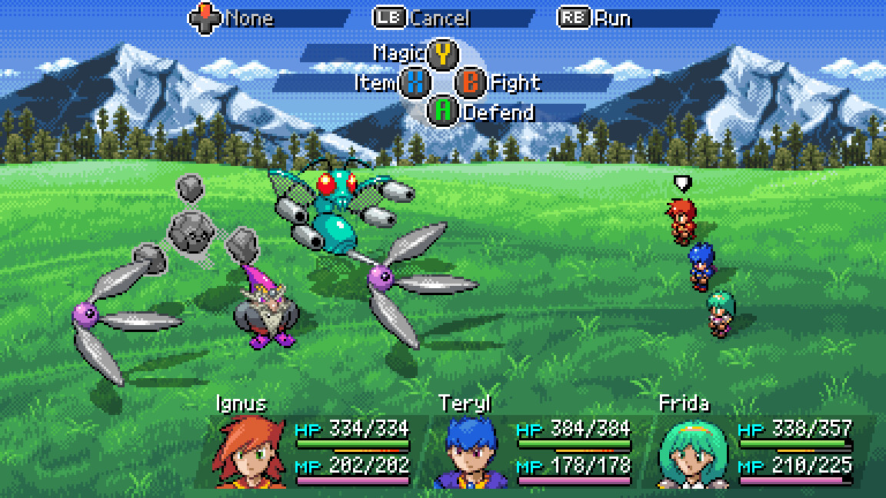

Xuất hiện game iOS mới có giá cực “chát”, nhưng game thủ không phải “muốn mua là được”
Hiếm có tựa game di động nào đắt, nhưng lại được cộng đồng quan tâm như thế này.
Game iOS mới khiến cộng đồng game thủ “đứng ngồi không yên”
Nếu là fan hâm mộ của những tác phẩm kinh điển như Chrono Trigger hay Final Fantasy VI, game thủ chắc chắn không thể bỏ qua Starlight Legacy ở thời điểm hiện tại. Ra mắt trên Steam vào đầu tháng 2 vừa qua, tới nay tựa game này đã mở thêm phiên bản di động trên iOS, khiến làng game quốc tế vô cùng hứng thú.

Starlight Legacy đưa người chơi trở lại thời kỳ hoàng kim của dòng game JRPG 16-bit. Ngay khi trải nghiệm, tựa game mang tới một cuộc phiêu lưu nhập vai đầy hoài niệm, lấy cảm hứng từ những tượng đài kinh điển của thể loại này. Với nền đồ họa pixel 2D tươi sáng, hệ thống chiến đấu theo lượt quen thuộc và cốt truyện phi tuyến tính, trò chơi mang đến cảm giác khám phá thế giới tự do hiếm có, khó tìm.


Trong Starlight Legacy, bốn tỉnh của Vương quốc Evaria đã sống trong hòa bình và thịnh vượng trong nhiều thập kỷ, nhờ vào Cây Vĩnh Hằng làm giàu và thanh lọc đất, nước và không khí của toàn bộ vương quốc. Tuy nhiên, một cuộc tấn công tàn khốc đã khiến vị thần bảo hộ này héo mòn. Vào vai hai chiến binh Ignus và Teryl, người chơi giờ đây phải đối mặt với nhiệm vụ khôi phục Cây Vĩnh Hằng để cứu vương quốc.
Game iOS hiếm hoi giá cao, nhưng vẫn khiến game thủ mê mẩn
Được biết, phiên bản iOS của Starlight Legacy có giá bằng với phiên bản Steam, lên tới 400 nghìn Đồng. Rõ ràng, đây là một mức giá rất cao so với đại đa số các game iOS ở thời điểm hiện tại. Thậm chí, theo chia sẻ của NPT, Starlight Legacy mới chỉ được ra mắt giới hạn ở một số khu vực (có Việt Nam), hiện tại người chơi EU chưa có cơ hội trải nghiệm trò chơi này.

Thế nhưng, Starlight Legacy vẫn đang nhận được sự ủng hộ mạnh mẽ từ phía cộng đồng game thủ. Có lẽ, do sở hữu lối chơi nhập vai “bánh cuốn”, đồ họa 16-bit thân thiện và cốt truyện kinh điển, nên tựa game đã dễ dàng chiếm trọn cảm tình ngay từ cái nhìn đầu tiên.

Vậy trước mức giá cao ngất ngưởng của Starlight Legacy, liệu độc giả có sẵn sàng “mở ví” để đầu tư trải nghiệm?